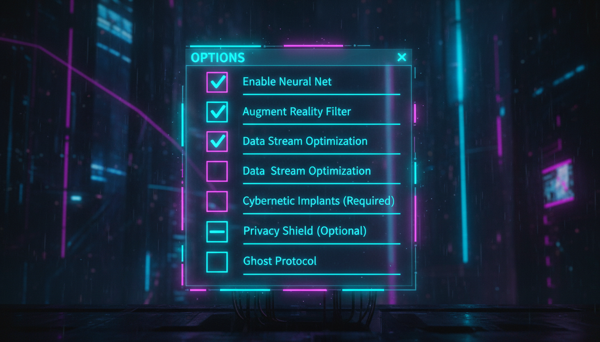

Вибір кількох опцій, Checked, CheckState, події

// Прапорці
CheckBox^ chkMusic = gcnew CheckBox();
chkMusic->Text = "Музика";
chkMusic->Location = Point(20, 20);
chkMusic->Checked = true;
CheckBox^ chkEffects = gcnew CheckBox();
chkEffects->Text = "Звукові ефекти";
chkEffects->Location = Point(20, 50);
// Тристанний прапорець
CheckBox^ chkOption = gcnew CheckBox();
chkOption->ThreeState = true;
chkOption->CheckState = CheckState::Indeterminate;
// Обробник
chkMusic->CheckedChanged += gcnew EventHandler(
this, &MyForm::OnCheckedChanged);
void OnCheckedChanged(Object^ sender, EventArgs^ e) {
CheckBox^ chk = (CheckBox^)sender;
String^ state = chk->Checked ? "увімкнено" : "вимкнено";
MessageBox::Show(chk->Text + " " + state);
}